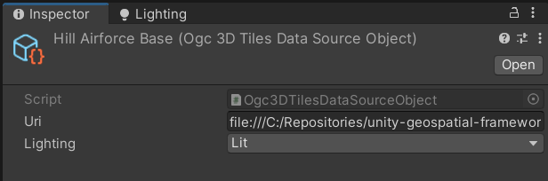
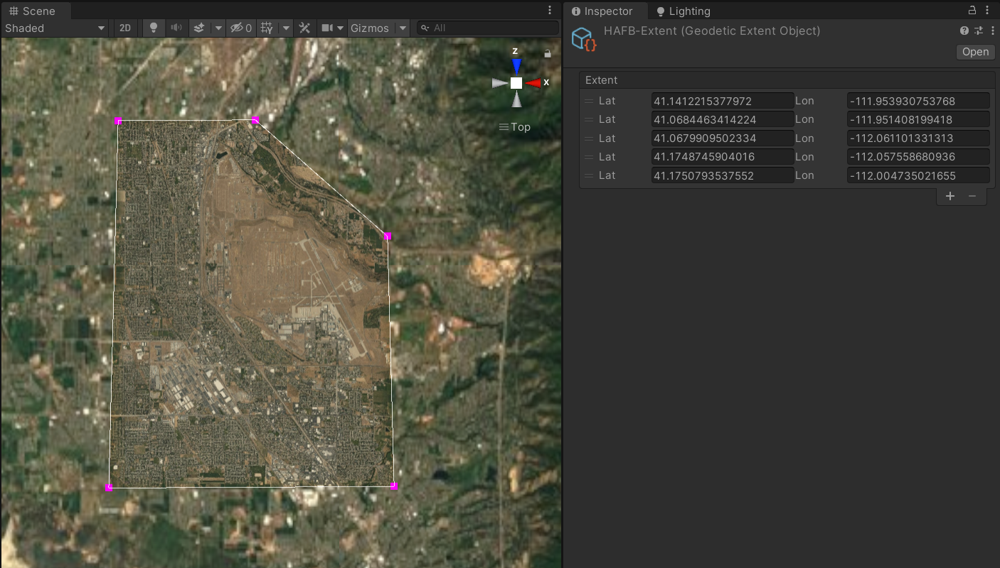

Adding Multiple Layers
This section assumes that you have already familiarized yourself with the First Time Setup section and understand how to import the package, create a scene and integrate the UnityGeospatial's core components.
Creating a New Geospatial Layer
If you followed the getting started guide, you now have a low-resolution dataset that covers the entire planet. For this tutorial, we will add a high resolution inset.
- Download the
HillAirforceBase-15cm-v1.0from the geospatial release folder and decompress the archive anywhere on your machine. - In your asset's right-click context menu select
Create -> Geospatial -> Data Sources -> OGC 3DTiles. - Name this newly created asset
HillAirforceBase. - Select the asset and, in the inspector, set the URI field of the asset to
file:///c:/path-to-dataset/tileset.json - Since this data source is unlit by default, which won't take advantage of the
HDRP, let's also force the data source's materials to be lit by changing the
Lightingsetting fromDefaulttoLit.

Adding Multiple Layers to the UG System
We will instruct our UG System to use multiple layers. In the UG System's inspector
configure the UG System such that it has two layers: UnityEarth and HillAirforceBase
Creating a Geodetic Extent
At this point, if we hit play, we will see both datasets. However, there are areas where the terrain comes out in front of the inset, which doesn't look great. In order to avoid this, we will add a modifier which will cut out the terrain from under our inset. However, before we do so, we need to define the extent that will be used to cut out our terrain.
- In the project window's context menu, select
Create -> Geospatial -> Data Type -> Geodetic Extent - Give this asset a meaningful name such as
HAFB-Extent - Hit play and navigate to the region of interest.
- Select our newly created asset and add a new point in the inspector.
- Enter Hill Airforce Base's lat/long:
41.109, -111.980 - A single point should also appear in the scene view at the entered coordinate.
- Form a convex shape by adding points and positioning them in the scene view.
- Once you are done editing the extent, make sure to click the
Validate & Applybutton in the inspector.
Applying the extent as a modifier
- Create an empty
GameObjectas a child of theUGSystemand call itExtentModifier - Add an
ExtentModifierBehaviourcomponent to the newly created object. - Add this modifier to the UGSystem's modifier stack.
- Set the extent to the one we created in the previous step.
- Add the terrain layer to the Difference mask.
- Add the high resolution inset to the Intersection mask.
- Hit play to observe the effect of this modifier.
